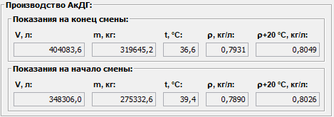

Описание области "Производство АкДГ"
Область данных "Производство АкДГ" отображает данные о АкДГ, произведенном за смену.
Эти данные поступают автоматически со счетчика АкДГ, отправленного на ТСП.
Внешний вид области "Производство АкДГ".

Система фиксирует показания счетчика отправленного АкДГ на начало и конец смены, и расчитывает данные о количестве произведенного АкДГ за смену.
Результаты производства АкДГ за смену отображаются в соответствующей области Итого за смену